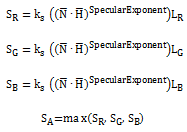

title: Spot-specular lighting effect description: Use the spot-specular lighting effect to create an image that appears to be a reflective surface where the light source is limited to a directed cone of light. ms.assetid: B6E24036-1548-4B9E-A8FE-8B87D4DBF97A keywords:
Use the spot-specular lighting effect to create an image that appears to be a reflective surface where the light source is limited to a directed cone of light. This effect uses the alpha channel as a height map and lights the image with a point light source.
The color of the output bitmap is a result of light color, light position, the direction of the cone and the surface geometry according to the specular portion of the Phong lighting model. The alpha channel output for each pixel with specular lighting is the maximum of the red, green, and blue channel outputs for that pixel.
The CLSID for this effect is CLSID_D2D1SpotSpecular.
The example here shows the input and output images of the spot-specular lighting effect.
Specular light refers to light that is reflected in a particular direction.

The effect calculates the final output pixel values are calculated using the equations here:

where

A spot light source emits light in a cone in a specific direction and doesn't emit light outside of the cone.
The spot light source calculates the Light Vector L and the Halfway Vector H the same way as the point-specular effect.
The effect calculates the light color, Lr, Lg, Lb, as a function of position of the light source as shown with the equations here:

The vector  is defined by these equations:
is defined by these equations:

The vector is defined by these equations:

| Display name and index enumeration | Description |
|---|---|
| LightPosition D2D1_SPOTSPECULAR_PROP_LIGHT_POSITION | The light position of the point light source. The property is a D2D1_VECTOR_3F defined as (x, y, z). The units are in device-independent pixels (DIPs) and are unbounded. The type is D2D1_VECTOR_3F. The default value is {0.0f, 0.0f, 0.0f}. |
| PointsAt D2D1_SPOTSPECULAR_PROP_POINTS_AT | Where the spot light is focused. The property is exposed as a D2D1_VECTOR_3F with (x, y, z). The units are in DIPs and the values are unbounded. The type is D2D1_VECTOR_3F. The default value is {0.0f, 0.0f, 0.0f}. |
| Focus D2D1_SPOTSPECULAR_PROP_FOCUS | The focus of the spot light. This property is unitless and is defined between 0 and 200. The type is FLOAT. The default value is 1.0f. |
| LimitingConeAngle D2D1_SPOT_SPECULAR_PROP_LIMITING_CONE_ANGLE | The cone angle that restricts the region where the light is projected. No light is projected outside the cone. The limiting cone angle is the angle between the spot light axis (the axis between the LightPosition and PointsAt properties) and the spot light cone. This property is defined in degrees and must be between 0 to 90 degrees. The type is FLOAT. The default value is 90.0f. |
| SpecularExponent D2D1_SPOTSPECULAR_PROP_SPECULAR_EXPONENT | The exponent for the specular term in the Phong lighting equation. A larger value corresponds to a more reflective surface. This value is unitless and must be between 1.0 and 128. The type is FLOAT. The default value is 1.0f. |
| SpecularConstant D2D1_SPOTSPECULAR_PROP_SPECULAR_CONSTANT | The ratio of specular reflection to the incoming light. The value is unitless and must be between 0 and 10,000. The type is FLOAT. The default value is 1.0f. |
| SurfaceScale D2D1_SPOTSPECULAR_PROP_SURFACE_SCALE | The scale factor in the Z direction for generating a height map. The value is unitless and must be between 0 and 10,000. The type is FLOAT. The default value is 1.0f. |
| Color D2D1_SPOTSPECULAR_PROP_COLOR | The color of the incoming light. This property is exposed as a Vector 3 (R, G, B) and used to compute LR, LG, LB. The type is D2D1_VECTOR_3F. The default value is {1.0f, 1.0f, 1.0f}. |
| KernelUnitLength D2D1_SPOTSPECULAR_PROP_KERNEL_UNIT_LENGTH | The size of an element in the Sobel kernel used to generate the surface normal in the X and Y direction. This property maps to the dx and dy values in the Sobel gradient. This property is a D2D1_VECTOR_2F (Kernel Unit Length X, Kernel Unit Length Y) and is defined in (DIPs/Kernel Unit). The effect uses bilinear interpolation to scale the bitmap to match size of kernel elements. The type is D2D1_VECTOR_2F. The default value is {1.0f, 1.0f}. |
| ScaleMode D2D1_SPOTSPECULAR_PROP_SCALE_MODE | The interpolation mode the effect uses to scale the image to the corresponding kernel unit length. There are six scale modes that range in quality and speed. See Scale modes for more info. The type is D2D1_SPOTSPECULAR_SCALE_MODE. The default value is D2D1_SPOTSPECULAR_SCALE_MODE_LINEAR. |
| Enumeration | Description |
|---|---|
| D2D1_SPOTSPECULAR_SCALE_MODE_NEAREST_NEIGHBOR | Samples the nearest single point and uses that. This mode uses less processing time, but outputs the lowest quality image. |
| D2D1_SPOTSPECULAR_SCALE_MODE_LINEAR | Uses a four point sample and linear interpolation. This mode outputs a higher quality image than nearest neighbor. |
| D2D1_SPOTSPECULAR_SCALE_MODE_CUBIC | Uses a 16 sample cubic kernel for interpolation. This mode uses the most processing time, but outputs a higher quality image. |
| D2D1_SPOTSPECULAR_SCALE_MODE_MULTI_SAMPLE_LINEAR | Uses 4 linear samples within a single pixel for good edge anti-aliasing. This mode is good for scaling down by small amounts on images with few pixels. |
| D2D1_SPOTSPECULAR_SCALE_MODE_ANISOTROPIC | Uses anisotropic filtering to sample a pattern according to the transformed shape of the bitmap. |
| D2D1_SPOTSPECULAR_SCALE_MODE_HIGH_QUALITY_CUBIC | Uses a variable size high quality cubic kernel to perform a pre-downscale the image if downscaling is involved in the transform matrix. Then uses the cubic interpolation mode for the final output. |
[!Note]
If you don't select a mode, the effect defaults to D2D1_SPOTSPECULAR_SCALE_MODE_LINEAR.
| Requirement | Value |
|---|---|
| Minimum supported client | Windows 8 and Platform Update for Windows 7 [desktop apps | Windows Store apps] |
| Minimum supported server | Windows 8 and Platform Update for Windows 7 [desktop apps | Windows Store apps] |
| Header | d2d1effects.h |
| Library | d2d1.lib, dxguid.lib |